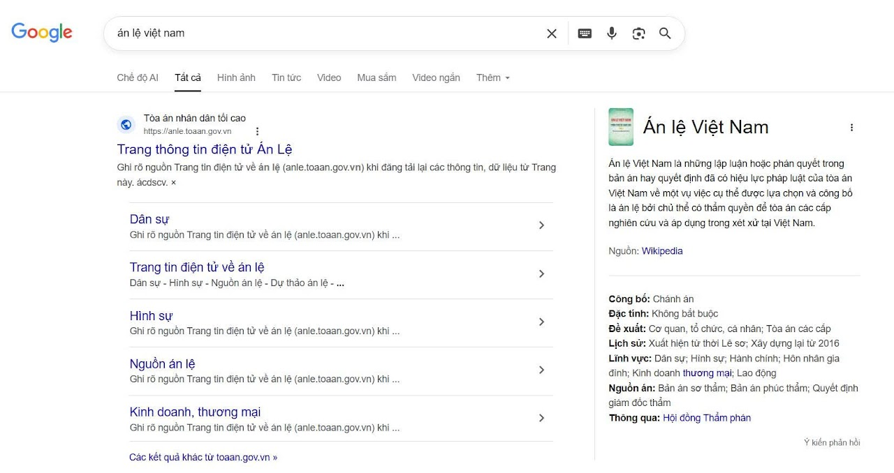

Tìm kiếm và đánh giá thông tin học thuật
🎯 Mục tiêu bài tập
Phát triển kỹ năng tìm kiếm và đánh giá thông tin học thuật từ các nguồn đáng tin cậy.
📝 Quá trình thực hiện
=> Em chọn chủ đề “Án lệ Việt Nam – vai trò và thực tiễn áp dụng trong hệ thống pháp luật” vì án lệ được thừa nhận từ năm 2016 và đang có ảnh hưởng ngày càng rõ trong hoạt động xét xử tại Việt Nam.
- Cơ sở dữ liệu học thuật (Google Scholar, Microsoft Academic, CSDL của thư viện trường)
- Tạp chí khoa học chuyên ngành
- Sách chuyên khảo
- Các nguồn mở trên internet
=> Em tìm tài liệu từ 4 nhóm nguồn bắt buộc gồm: cơ sở dữ liệu học thuật (Google Scholar), tạp chí chuyên ngành, sách chuyên khảo và nguồn mở trên Internet. Ngoài ra, em bổ sung thêm cổng thông tin chính thức của TANDTC và các báo cáo chính sách/nhà nước để tăng tính thực tiễn.
Em thu thập 10 nguồn tài liệu về án lệ Việt Nam trong giai đoạn 2015–2025, bao gồm bài báo khoa học, sách chuyên khảo, báo cáo và nguồn mở chính thống; trong đó có các bài nghiên cứu học thuật tiêu biểu như Nguyễn Văn Cường (2018), Trần Thị Hiền (2020), Lê Mai Anh (2021).
=> Khi tìm trên Google Scholar, em ưu tiên các bài có chỉ số trích dẫn cao và xuất bản trên tạp chí có phản biện.
Em lập bảng tổng hợp 10 nguồn theo các trường thông tin: tác giả/cơ quan, năm, loại nguồn, tiêu chí nổi bật và mức độ tin cậy (1–5) để dễ so sánh và lựa chọn nguồn phù hợp cho nghiên cứu.
📸 Minh chứng làm bài
